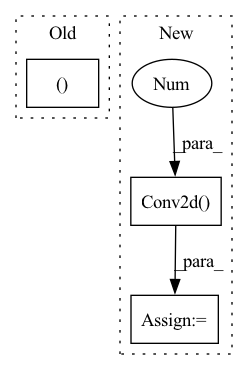

Pattern ID :21359
Before Change
// original code uses bias=False even though there is no norm layer
stem_layers.append(nn.Conv2d(in_c, out_c, 3, stride=2, padding=1))
stem_layers.append(nn.GELU())
in_c, out_c = out_c, out_c * 2
self.stem = nn.Sequential(*stem_layers)
self.trunk = nn.Sequential(*[PatchConvBlock(embed_dim, drop_path=drop_path) for _ in range(depth)])After Change
super().__init__()
self.norm_type = norm_type
self.out_channels = (embed_dim,)
self.stem = nn.Sequential(
nn.Conv2d(3 , embed_dim // 8, 3, stride=2, padding=1) ,
nn.GELU(),
nn.Conv2d(embed_dim//8, embed_dim // 4, 3, stride=2, padding=1),
nn.GELU(),In pattern: SUPERPATTERN
Frequency: 3
Non-data size: 3
Instances Fragment ID: 68180338
Project Name: gau-nernst/vision-toolbox
Commit Name: 9c33936b15da329b7d51d981196aca20d5e00077
Time: 2022-03-04
Author: gau.nernst@yahoo.com.sg
File Name: vision_toolbox/backbones/patchconvnet.py
M Class Name: PatchConvNet
N Class Name: PatchConvNet
M Method Name: __init__(7)
N Method Name: __init__(5)
M Parent Class: BaseBackbone
N Parent Class: BaseBackbone
M File Name: vision_toolbox/backbones/patchconvnet.py
N File Name: vision_toolbox/backbones/patchconvnet.py
M Start Line: 140
M End Line: 150
N Start Line: 155
N End Line: 172
Before Change
assert inMask.dim() == 4, "mask must be 4 dimensions"
inMask = inMask.float()
ntimes = 2**nlayers
inMask = F.interpolate(inMask, (inMask.size(2)//ntimes, inMask.size(3)//ntimes ), mode="nearest")
inMask = inMask.detach().byte()
return inMaskAfter Change
convs = []
inMask = Variable(inMask, requires_grad = False)
for id_net in range(conv_layers):
conv = nn.Conv2d( 1,1 ,4,2,1, bias=False)
conv.weight.data.fill_(1/16)
convs.append(conv)
lnet = nn.Sequential(*convs)
if inMask.is_cuda: Fragment ID: 68180308
Project Name: kumapowerliu/rethinking-inpainting-medfe
Commit Name: 17d04d208950c9c4e2e8bc5251cf06205ec15285
Time: 2020-11-07
Author: 33801357+KumapowerLIU@users.noreply.github.com
File Name: util/util.py
M Class Name: AnonimousClass
N Class Name: AnonimousClass
M Method Name: cal_feat_mask(3)
N Method Name: cal_feat_mask(2)
M Parent Class:
N Parent Class:
M File Name: util/util.py
N File Name: util/util.py
M Start Line: 78
M End Line: 83
N Start Line: 76
N End Line: 93
Before Change
SqueezeExcitation(embed_dim, embed_dim // 4),
nn.Conv2d(embed_dim, embed_dim, 1)
)
self.layer_scale = nn.Parameter(torch.ones((embed_dim,1,1 )) * layer_scale_init)
self.drop_path = StochasticDepth(drop_path, "row") if drop_path > 0 else nn.Identity()
def forward(self, x: torch.Tensor):After Change
if norm_type == "ln":
// LayerNorm version. Primary format is (N, H, W, C)
// follow this approach https://github.com/pytorch/vision/blob/main/torchvision/models/convnext.py
self.layers = nn.Sequential(
nn.LayerNorm(embed_dim),
nn.Linear(embed_dim, embed_dim),
nn.GELU(),
Permute(0, 3, 1, 2), // (N, H, W, C) -> (N, C, H, W)
nn.Conv2d( embed_dim, embed_dim, 3 , padding=1, groups=embed_dim) , // dw-conv
nn.GELU(),
SqueezeExcitation(embed_dim, embed_dim // 4),
Permute(0, 2, 3, 1), // (N, C, H, W) -> (N, H, W, C) Fragment ID: 68180342
Project Name: gau-nernst/vision-toolbox
Commit Name: 9c33936b15da329b7d51d981196aca20d5e00077
Time: 2022-03-04
Author: gau.nernst@yahoo.com.sg
File Name: vision_toolbox/backbones/patchconvnet.py
M Class Name: PatchConvBlock
N Class Name: PatchConvBlock
M Method Name: __init__(5)
N Method Name: __init__(4)
M Parent Class: nn.Module
N Parent Class: nn.Module
M File Name: vision_toolbox/backbones/patchconvnet.py
N File Name: vision_toolbox/backbones/patchconvnet.py
M Start Line: 77
M End Line: 89
N Start Line: 77
N End Line: 109